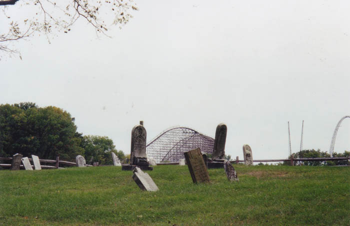
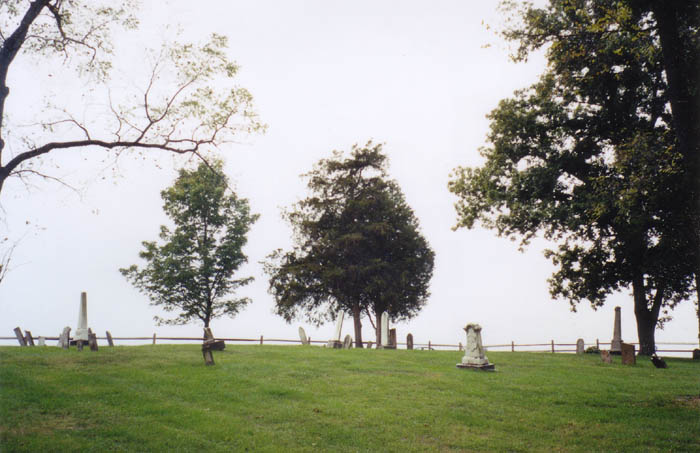
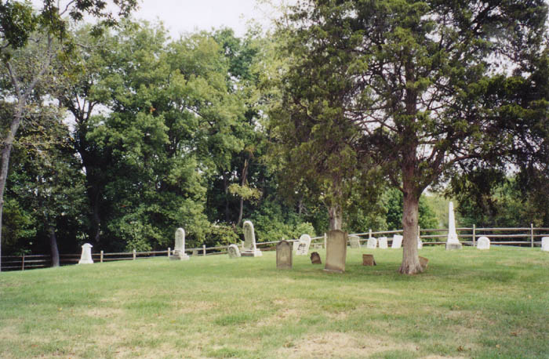
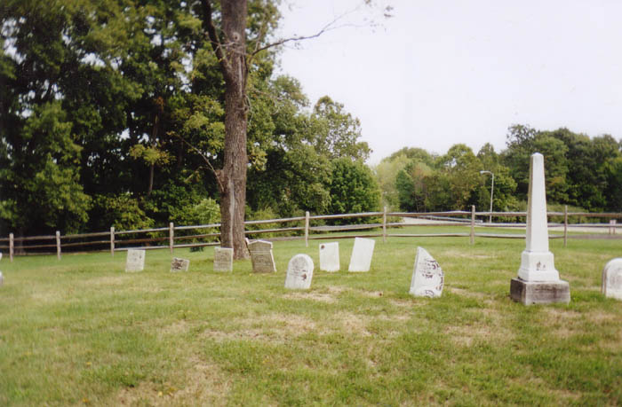
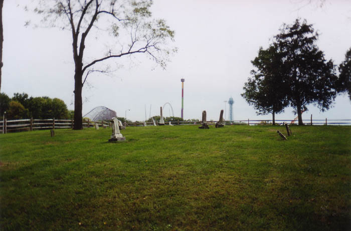

It's fairly common knowledge that King's Island has several ghosts. One of them is the spirit of a little girl who supposedly frequents the waterworks and appears on the tram tracks after dark. She is said to be buried in this cemetery, which is located way down at the end of the King's Island parking lot, between the park and the campground.


The cemetery is surrounded by a decorative wooden fence but is otherwise unguarded. When Katydid and I visited it on a September weekday the park was closed and no one stopped us, although I am aware that the park is heavily guarded year-round. So much for ghost hunting there at night.

Not knowing the girl's name was a handicap, but we did find several childrens' gravestones. Most of these date from the mid-to-late 1800s. As far as I know the ghostly little girl has not been sighted in the cemetery, but if she haunts the park it seems probable that she'd appear here as well. Stop by one night and see.
Hauntings of Kings Island
Paramount's King's Island: Official Site

Back
forgottenohio@yahoo.com